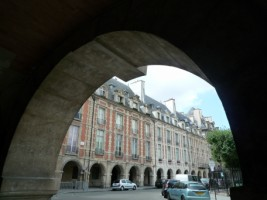
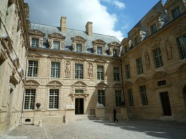
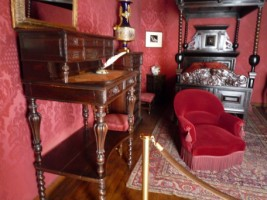
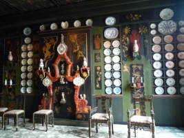

パリ４区にあるマレ地区一帯にはオススメがたくさん。カフェ、レストラン、雑貨屋さんだけでなく、そこにはたくさんの歴史的建造物が点在しています。
マレ地区の地図／クリックすると拡大します。
まずメトロ1番もしくは11番線などでl’Hotel de Ville（パリ市役所）で降りると移動がしやすい。市役所の中には郵便局も入ってい るので覚えておくと便利。では、まずはこの市役所の前にあるお店を紹介しましょう。日本でも有名なパン屋さんPaulが ちょうど角に立っています〈フランスでも人気）。結構いろんなところに店舗があるので見かけたらお試しを。さらに目の前にあるRue de Rivoliを東に向かって歩いていくと、BHV（べーアッシュヴェー）と いうデパートが現れます。化粧品、アクセサリ－から日用雑貨品などを多く扱っているお店です。他のデパートとは少し違って庶民のデパートと言ったところでしょうか。
パリ市庁舎
さらに進んでいくと、Rue du Bourg-Tibourgという通りがあります。ここを左手に入っていってみてください。ガイドブックなどでも有名なMariage Freres（マリア－ジュ フレ－ル）というお茶専門のお店があります。店内には数多く世界中からのお茶が売られていて、 お土産に買っていく人をよく見ます。もちろん店内でそのお茶を味わうこともできます。少しお高めですが。私的には、一つ向こうの 通りにあるEtoile Manquante（エトワ－ル マンカントゥ）というカフェがおもしろくてオススメ。私も知り合いに教えて もらったカフェなのですが、ある有名なデザイナ－が設計したらしく、そのおトイレのデザインがすごい。一度入ってみてください。さらに、その通りとぶつっかている通りが、Rue ste-Croix-de-la-Bretonnerie。この通りにあるPylones（ピロヌ）と いう雑貨店には、たくさん変わったものが…見てるだけども楽しい（パリ市内にいくつか店舗があります）。デザインなども面白かわいく、ついつい買ってしまいます。ちょっと変わったお土産にオ ススメ。そしてこの通りをまた東の方へ進んでいくと今度はRue Vieille du Templeという通りに出ます。ここからMusee Carnavalet（カルヴァナレ美術館）までの 一帯には他にもたくさん小さなお店があるのでチェックを。歩いているだけで楽しいですよ。
さてそのMusee Carnavalet（カルナヴァナレ美術館）とはルネサンス様式の館で、１６７７~１６９６年には書簡文学で名高いセ ビニェ婦人が住んでいました。カルナヴァナレ館とプルチエ・ドゥ・サン・ファルジョー館からなり、共にパリ市歴史博物館として資料を年代別に展示しています。豪華な調度品などから当時の生活ぶりがうかがえます。たくさんの部屋があり、見た目よりまわるのに結構時間がかかります。さらになんといってもこの美術館いつも無料なんです。朝１０時から１８時まで。月曜・祝日が休館です。ぜひ時間があれば訪れてみてください。

Musee Carnavalet
さらに、Rue des Francs Bourgeoisを東へまた進んでいくと、Rue du Pas-de-la-Muleにかわり、Place des Vosges （ヴォ－ジュ広場）に着きます。 この広場は芝生で美しく飾られおり、中央にはルイ１３世の騎馬像が立っています。とても落ち着く広場です。そしてその広場をぐるっととリ囲むように、たく さんのア－トギャラリ－が並んでいます。広場がちょうど正方形の形をしているので、とてもユニ－クな一帯となっています。
ヴォージュ広場はもともとあったTournellesの館（王の住居）とその公園の上に築かれました。1559年、Tournellesの馬上槍試合においてアンリ2世が怪我をし死去すると、王妃Catherine de Medicis〈カトリーヌ・ド・メディシス）はそのゴシックの館を崩し、ルーヴル宮へと引っ越して行ってしまったのです。1605年から1612年にかけてアンリ4世によって再び広場が再構築され、1612年にはルイ8世とオーストリアのアンとの結婚を祝うための騎馬パレードがここで開催されました。ヨーロッパに見られる居住区広場としての原型をなしていきます。またこの時から家の正面が同じデザインに統一されます。南北に一際高く伸びる2つのパヴィリオンはthe Pavilion of the King〈王の館） と the Pavilion of the Queen〈王妃の館）と名付けられていますが一度も王室の人物が住むことはありませんでした。フランス革命前まではこのようにこの場所はthe Place Royale 「王の広場」と呼ばれていました。


今では人々が集う美しい公園。四方を建物に囲まれ全体がきれいにまとまって見えます。
{kind=link}


建物の下はこんな風に歩けるようになっており、カフェ、レストラン、アトリエなどが並んでいます。


ちょっと狭い場所でカフェは・・・落ち着きがなさそう・・・人が思いっきりテーブルの間を通りますから。お店は見ていておもしろいですよ。アートギャラリーをウィンドー越しに見ながら歩いて行きます。


そしてthe Pavilion of the King と the Pavilion of the Queenですが、特に何かがあるわけではなくその部分が少し高い建物になっています。
Hotel de Sullyシュリー館：ヴォージュ広場の南西の位置に小さな入り口があり、そこを入って行くとシュリー館の敷地です。Rue St Antoineに通り抜けができますが正式には62 rue Saint-Antoineと住所になっており入り口はこちらから入ったほうがいいかもしれません。
1624年、宰相Mesme GalletはPlace Royale〈現在のヴォージュ広場）に通じるような形で館を建てさせます。その後1634年、アンリ4世の宰相シュリー公Maximilien de Bethune〈マクシミリアン ドゥ ベテュヌ）がこれを買い取り、内装を完成させ晩年をここで迎えます。さらに1660年、彼の孫Maximilien、2番目のシュリー公が新しい棟を追加。シュリー家は18世紀までこの館を所有していました。その後ざまざまな持ち主の手に渡り、1862年に歴史的建造物として登録され、2000年にはCentre des monuments nationauxとなり歴史的建造物の保護管理を運営する公共機関として機能しています。。



ヴォージュ広場の南東隅にはヴィクトル・ユーゴ記念館。
この建物はもともとIsaac Arnauld〈1566年~1617年）と言うCorbevilleの領主に由来します。シュリーによりフランス王国の経理担当者とされ、ヘンリ4世に財務監督職に推されるという経歴を持ち、Hotel de Guemene〈ゲムネ館）を現ヴォージュ広場に建てます。さらにde Rohans familyにより実質的に改善がなされ、Hotel de Rohan-Guemenee〈ロアン‐ゲメネ館）と名づけました〈アクサンは省略）。そして1832年になり、ヴィクトル・ユーゴが30歳のときに妻Adeleと伴にこの家に引っ越してきます。
ヴィクトル・ユーゴの友達として知られる小説家で脚本家のPaul Meurice〈1818年~1905年）により多額の寄付がなされこの館が記念館として姿を変えることになります。



Musee de Victor Hugo ホームページ
中央写真はヴィクトル・ユーゴの寝室。ここでユーゴは1885年に亡くなります。また、手前にあるのは小説を書くための机。立って書いていたことがこの部屋にある写真を見てわかります。
さてヴォージュ広場を離れてRue St Antoineへと出ます。ちょうどRue de Rivoliと名前が変わるあたりに大きな少し黒ずんだ教会が見えてきます。
St Paul St Louis教会：1627年にルイ13世が第一番目の石を置いたところからこのイエズス団体のための教会の建設が開始されました。パリでも最も古いドームの一つ、そのスタイルは典型的なイエズススタイルで建築においてもとても興味深く、また多くの芸術作品が使われています。


おしゃれなお店が立つ通りで一際目立つ教会。目の前に立つと威圧感を感じます。
さあRue de Rivoliをまた進み、市庁舎へ戻って今度は北上して行きます。するとCentre G.Pompidou（ポンピドゥｰセンター）が見えてきます。役立ち情報・観光名所でも紹介したように、ここには近代美術作品 がたくさん展示してあります。またこの建物には図書館や、本屋さんも入っており、ア－トの好きな人にはもちろん、またそうでない人にもきっと楽しめる場所 だと思います。例えば、私のオススメは入り口左のエスカレ－タ－を登った所にある最新デザインの売店。かなりユニ－クなものがみつかります。変わったデザインの家具、台所用品、文房具類など、他にもたくさん、ちょっとした小物なんかはお土産にいいかもしれませんん。さらに、ここからのパリの眺めもオススメ します。遠くにサクレク－ル寺院などが眺められ、作品を見ながらくつろぐのもいいでしょう。
ポンピドゥｰセンターの５階からの眺めです。この向こう側にサクレク－ルが。みんな写真を撮っている様子。
現代美術作品。いろんないすがテ－ブルにくっついている。ゴミだらけの部屋。高島屋の紙袋が…
Centre G.Pompidou ホー ムページ
またパリ市役所の向かいにSt Gervais St Protaisという教会があります。この教会の裏側に細い路地Rue des Barresがあります。ここもとても雰囲気のある通りで、通りの最後に教会のハチミツやさんがあります。その名もProduits des monasteres（プロデュイ デ モナステル）、小さなお店ですが店内には数多くの種類のハチミツ やジャムがそろっていてオススメ。どれも無添加。ブル－ヴェリ－ジャムが好きな私ですが、ブルーヴェリ－ってこんな味なんだと初めて知ったような気がしまし た。もともと教会の僧侶は人里から離れたところにすんでいてこのような蜂蜜やジャム作りをして昔は町に売りに来ていたということです。
Produits des monasteres 住所：10 rue des Barres 75004
この看板が目印。
ちなみに、このマレ地区という一帯はゲイの方がたくさんいらっしゃる地域です。カフェなどでも少し違った光 景を目にするかもしれませんが、それも文化の違いと思って！！！
パリ4区関連ページ：フィリップ・オーギュストの城壁 こちらのページでもパリ4区の歴史的な見所を紹介しています。
パリ4区関連ページ：パリで見つけた芸術 パリ4区にある国際芸術都市